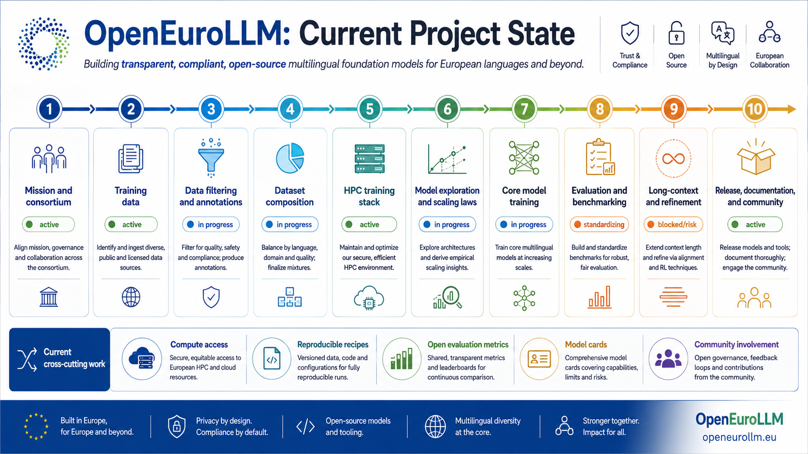

Data And Governance
Source registries, licensing, privacy review, quality filtering, deduplication, contamination control, and multilingual mixtures.
OpenEuroLLM · Technical Blueprint · 2026
A citation-grounded blueprint for training and releasing open multilingual foundation models.

What it covers
Source registries, licensing, privacy review, quality filtering, deduplication, contamination control, and multilingual mixtures.
Tokenizers, dense baselines, MoE candidates, sparse attention, scaling-law experiments, HPC portability, checkpointing, and observability.
SFT, DPO, RLHF, GRPO/RLVR, reasoning data, agent/tool-use training, and regression testing after every capability stage.
Multilingual benchmarks, long-context tests, safety, model cards, dataset cards, reproducible recipes, and open artifact manifests.
Richer project edition
The live PDF uses the richer OpenEuroLLM working-context edition, including the project-state infographics and linked citations.